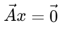
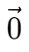
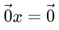
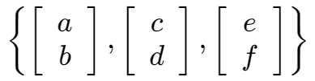
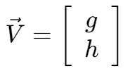
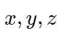
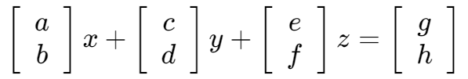
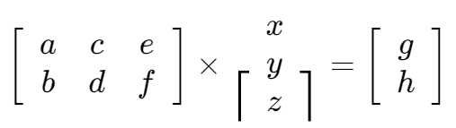
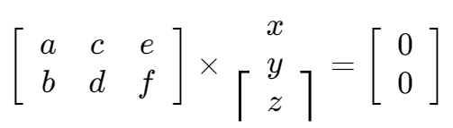

线性相关 | Linear Dependence
齐次式 | Homogeneous Equation

线性相关判断
对于一个齐次式 ，
若其只具有零解，则向量 A 线性无关,,；
若其具有非零解，则向量 A 线性相关,,。
由此可推出，对于零向量 ，
由于  具有无穷个解，故零向量线性相关。
线性组合 | Linear Conbination
对于一组向量

对于另外一个向量 ，若有一组数  使其满足：

则称向量 V 为该组向量的线性组合。
向量组的线性相关
对于上述方程，可以转化为：

将该式转化为齐次式，即

与前文相同，
若该齐次式只具有零解，则该向量组线性无关；
若该齐次式具有非零解，则该向量组线性相关。